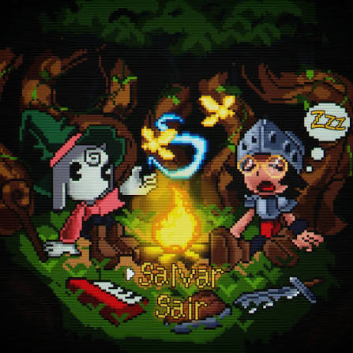

Miseryswin é um artista brasileiro da cena independente de hip-hop, emo rap, cloud rap e bedroom pop, conhecido por misturar melodias melancólicas, letras introspectivas e produções com estética lo-fi. Suas músicas abordam temas como sentimentos, relacionamentos, autoconhecimento e nostalgia, criando uma atmosfera emocional e intimista. Entre seus trabalhos mais conhecidos estão os álbuns SE SONHOS PUDESSEM SER GUARDADOS (2024) e O MAGO (2026).
